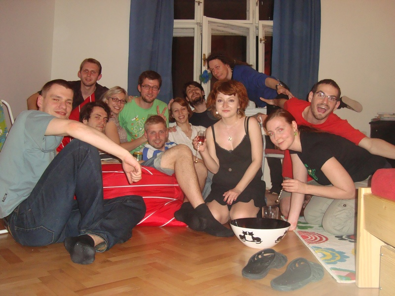
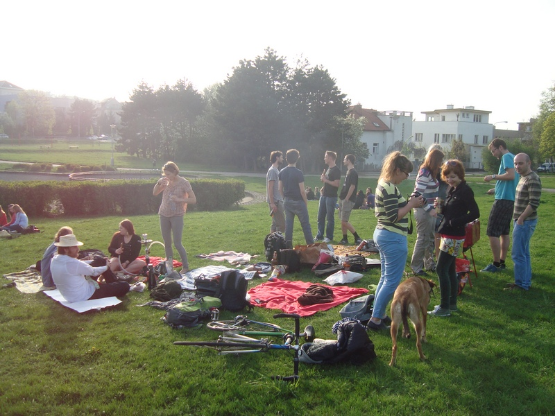

Tak nějak nevím, jestli to tu ještě někdo čte :D … ale v zásadě je to jedno, protože blog je moje malá radost, ke které se teď uchyluju čím dál raději - protože si tu můžu psát co chci a jak chci a nemusím se vůbec trápit otázkama, kdo je můj cílový čtenář a kam mám do textu nenápadně včlenit reklamu :D. Ano, blog se teď pro mě stal skutečně osvobozujícím místem.
Minule jsem psala o kulturních zážitcích měsíce dubna, teď tedy ve zkratce o těch méně kulturních :D. Za párty měsíce bych rozhodně označila Míšovu kolaudačku, proloženou vzpomínáním u starých fotek, traumatizujícími historkami z minulosti, trochou voyerství a skupinovými orgiemi :D. Z toho myslím dost jasně vyplývá, že většina fotek je nepublikovatelných a nechcete je vidět :D …

Jedna seriozní
Tradiční jarní piknik jsme kvůli vrtkavému počasí letos uskutečnili až na prvního máje (není to tedy “dubnová” akce, ale nechtělo se mi kvůli ní zakládat nový příspěvek). Účast byla překvapivě veliká, i když ne všichni vydrželi až do úplného konce. Počasí však přálo, pogrilovali jsme si, pokecali, zahráli si hry a na závěr vypustili do vesmíru tři lampiony :-). Fotky z akce najdete na fejsbuku.

Pikniková pohodička
Krom toho jsme během uplynulého měsíce podnikli ještě nakupovací výlet do Trenčína, poprvé jsme navštívili Strání (mimochodem krásný kraj plný srnek a dobrých lidí :-)) a já tam potkala vzdálené příbuzné paní, ke které se jezdívám stříhat (doteď z toho mám Vánoce :D!), poprvé se nám také stalo, že jsme se vypravili do kina a bylo vyprodáno (Šmejdi = Art plný důchodců) a podnikli jsme i tour de pub na přehradě :D. Zkrátka to bylo strašně nabité a doufám, že květen bude o něco klidnější měsíc, abych se stihla trochu zregenerovat. Miluju státní svátky uprostřed týdne :-)!
A na závěr jedna malá dubnová posedlost - úžasná Adele :-)!
Komentáře (3)
Komentáře jsou uzavřené.